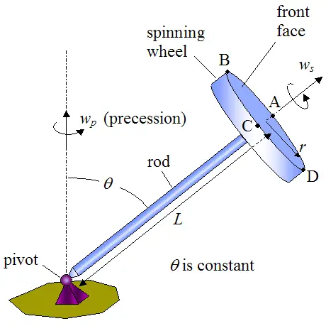

Important APL100 Questions and Concepts revised through single Question :
A gyroscope wheel is spinning at a constant angular velocity ws while precessing about a vertical axis at a constant angular velocity wp. The distance from the pivot to the center of the front face of the spinning gyroscope wheel is L, and the radius of the wheel is r. There are three subparts in this question.
- Question subpart 1
- Question subpart 2
- Question subpart 3
